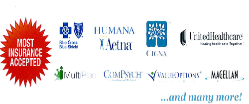

Our services revolve around informational assessments, education, and treatement for substance abuse.
With our registrations through the Kansas Behavioral Sciences Regulatory Board and various national organizations, we offer treatment for substance abuse issues in a safe and confidential environment.
We believe people deserve the best treatment filled with dignity and respect.
We believe in our treatment models which are based on our many years of experience.
We strive to make a client feel safe, relaxed, and hopeful that their future will be improved through treatment.
We believe everyone in society benefits from respect, care, and compassion in all stages of life; especially when addiction and stress have impacted life’s activities.
We offer assessments, education, information, and treatment for individuals, groups, and families.
We both accept referrals from and offer referrals to legal counsel as needed to the benefit of our patients.
We accept most major insurance plans for our assessment, educational, and treatment programs.
